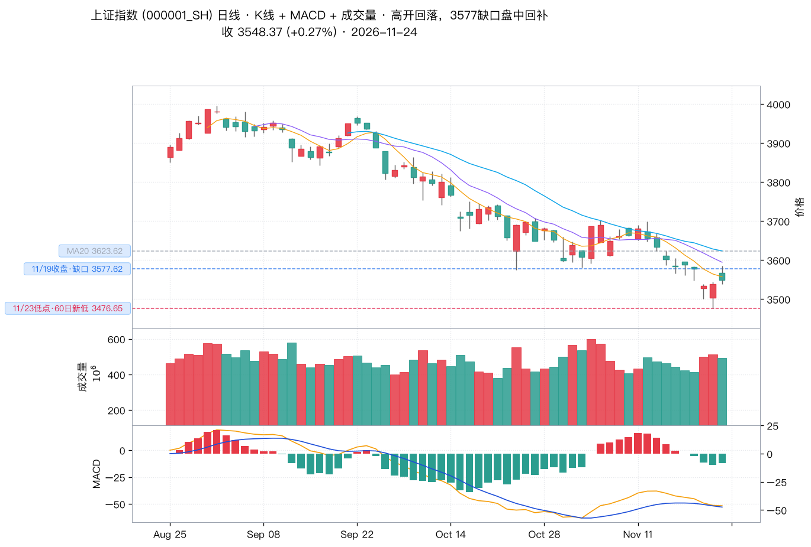
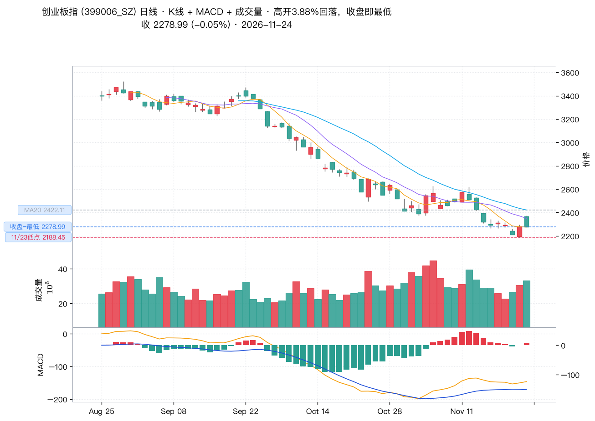
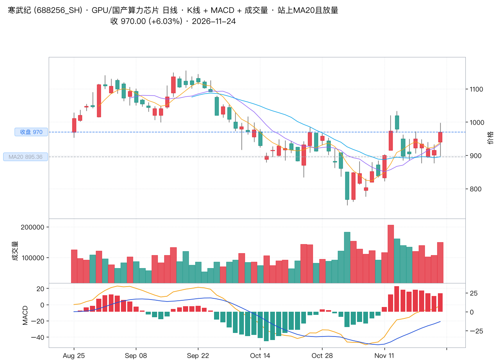
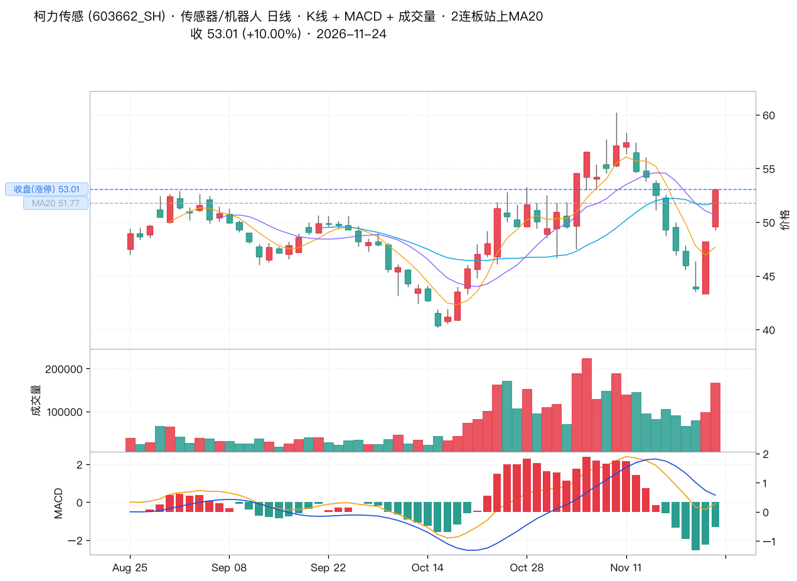
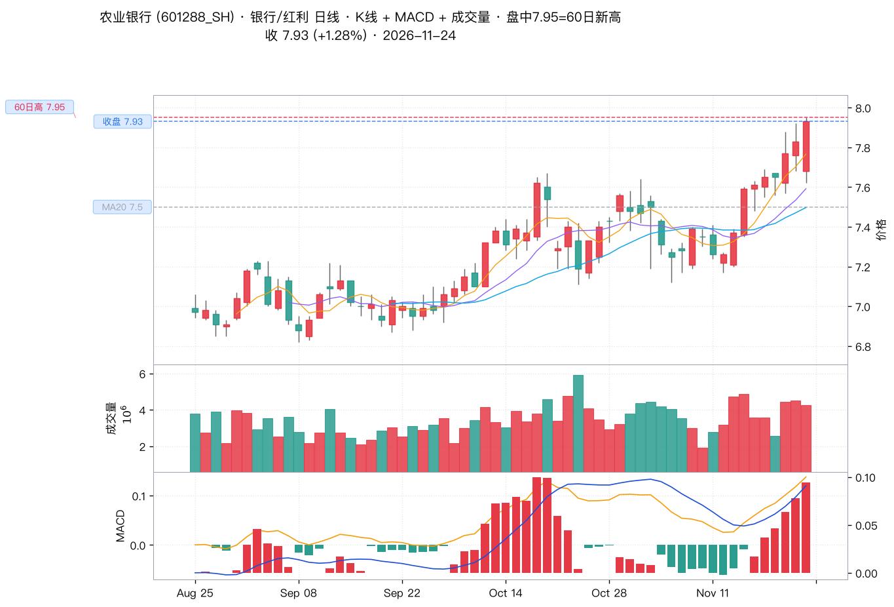

🟡 高开冲高回落 —— 她 10:03「11月23日已经完成了C5的下跌」两天没被证伪（3476.65 未破），但「新反弹浪」还没站上 MA20：上证收 +0.27%，全靠银行与电子撑住；创业板从 +3.88% 高开砸回 -0.05%，收盘 = 全天最低；涨停从 145 骤降到 53。操作：只做回踩，不追高开。
| 时间 | 信号 | 原文 | 判读 / 日线实测 |
|---|---|---|---|
| 06:24 | 外盘 | 「英伟达狂涨31.48%……道指涨1448点，纳指涨1471点」 | 无法核验：A 股日线核不了；31.48% 对万亿市值属异常量级，只记博主口径 |
| 10:03 | 定性 | 「个人看11月23日已经完成了C5的下跌。接下来，耐心等待新的反弹浪……甚至等待2027年春天的故事」 | 未证伪：3476.65 两日未破（今日最低 3539.01）；但反弹浪要站上 MA20 3623.62，现差 75.25 点 |
| 12:18 | 亚太 | 「台湾省股市涨停，大涨9.05%。韩国股市大涨7.15%。日本股市涨3.86%」 | 无法核验（A 股日线）；她次日 08:46 自报日经 -1606 点、韩 -4.8% → 一日游 |
| 13:58 | 传感器 | 「力传感器龙头连续拉2个20厘米，传感器龙头也连拉2个板！」 | 分毫不差：安培龙 +20.00%（两连 20cm）、柯力传感 +10.00%（两连板） |
| 14:20 | 缺口 | 「早盘所跳的缺口回补了也好，免得坏主力惦记着！」 | 盘中口径：最低 3539.01，距缺口下沿 3538.95 差 0.06 点 —— 几乎回补、未补完 |
| 22:36 | 外盘 | 「道指下跌135点，纳指跌395点」 | 一夜反向：她次日 06:36 改报收盘道指 +423、纳指 -356，尾盘 V 型拉回 |
| 21:05 | 事件 | 「工业富联……10派6.7元，合计派现132.85亿」 | 事件记录，不是买点；该股不在跟踪池 |
| 06:31–20:20 | 情绪·话题 | 加征关税「又搞这套」、MateX8、陈吉宁等 5 条 | 无方向信号 |
另 1 条为早安问好，与交易无关。

开 3567.84 / 高 3585.22（回补 3577.62）/ 低 3539.01 / 收 3548.37 · 仍在 MA20 3623.62 之下

开 2368.70（+3.88%）/ 高 2376.34 / 收 = 低 2278.99 —— 高开 3.88% 的涨幅一分不剩
上证开 3567.84（+0.82%）、最高 3585.22 把 11/19 的 3577.62 缺口补掉，收 3548.37；银行（中行 +1.62%、农行 +1.28%）与电子（申万 +0.79%、涨停 5 家）撑住红盘。创业板开 2368.70、高 2376.34，收在 2278.99，深成指 -0.29% 同样高开低走。
| 板块 | 当日实测 | 行业交叉 | 打法 |
|---|---|---|---|
| 半导体设备/材料 | 自建池 +1.61%（10 只 7 涨）、光刻胶 +1.40%；芯源微 +7.33%、中科飞测 +4.93%、江化微 +6.92% | 申万电子 +0.79%（624 只 353 涨），涨停 5 家 | 芯源微站上 MA20 221.74 但量比 99.8% = 没放量；中科飞测 239.24 还在 MA20 之下 → 只做回踩，放量再谈进攻 |
| PCB | 自建池 +1.63%（9 只 6 涨）当日最强；胜宏 +6.27%、景旺 +3.11%、沪电 +1.73% | 与申万电子同向 | 池强而龙头没站上均线：胜宏开 130.00 高 134.80 收 122.32，仍在 MA20 129.57 下；景旺 58.65 也在 MA20 下，只有沪电站上 83.35 → 高开就是卖点，不追 |
| 银行/红利 | 自建池 +0.71%（6 只 5 涨）；中行 +1.62%、农行 +1.28%（盘中 7.95 = 60 日新高） | 申万银行 -0.31%（42 只 17 涨）→ 大票红、行业仍绿 | 防御垫，只在大盘杀跌时加；中行 7.51、农行 7.93 均站上 MA20 |
回避：煤炭 -1.84%（39 只 2 涨）、公用事业 -1.26%、有色 -1.25%、非银 -1.23%、钢铁 -1.21%；她看好的美股存储链 A 股没跟（存储芯片池 -0.14%），算力租赁 -0.95%。军工是唯一行业口径过 1% 的方向（申万 +1.05%，113 涨 38 跌），但自建池 8 只仅 +0.27%、成交 40 亿，龙头不硬，不进推荐。
| 标的 | 收盘 / 涨跌 | 成交额 · 量比 | 关键位实测 | 动作 |
|---|---|---|---|---|
| 寒武纪 688256 主线龙头（她未点名，按实测入选） | 970.00 +6.03% | 143.2 亿 121% | 站上 MA20 895.36；60 日高 1154.79（差 16%）；今日低 897.90 贴着 MA20 完成回踩 | 回踩 895 不破可持有，破 895 放弃 |
| 柯力传感 603662 她点名 · 传感器 | 53.01 +10.00% 2 连板 | 8.8 亿 167% | 站上 MA20 51.77；11/23、11/24 两个 +10.00%，对应她 13:58「传感器龙头也连拉2个板」 | 不追第 3 板；回踩 51.77 不破才可接 |
| 农业银行 601288 防御垫 · 银行 | 7.93 +1.28% | 33.3 亿 — | 站上 MA20 7.50；最高 7.95 = 60 日新高 —— 全市场 3498 只下跌的一天里创 60 日新高 | 回踩 7.50 可分批，跌破 7.50 放弃 |

开 940.00 / 高 998.00 / 低 897.90（贴 MA20 895.36）/ 收 970.00 · 量比 121% 放量站上 MA20

开 49.56 / 高 53.01（= 收盘）/ 低 49.26 · 两连板 · 收复 MA20 51.77

高 7.95 = 60 日新高 · MA20 7.50 之上 · 成交 33.3 亿
| 11/23 给的条件 | 11/24 实测 | 判定 |
|---|---|---|
| 风华高科 28.99 不破 | 收 28.25（-2.55%），开 30.43、高 30.98 后砸到最低 28.20，最低已破 28.99 | 证伪 · 一日游 |
| 宇树 708 不破 | 低 708.30（差 0.30 守住），高 762.61、收 718.00（+1.41%），盘中 +7.7% 收窄 | 守住但冲高回落 |
| 站上 MA20（沪 3628.61） | 收 3548.37，差 80.24 点 | 未兑现 |
| 她 06:24「美股存储芯片大涨」 | 存储芯片池 -0.14%，A 股不跟 | 未传导 |
| 「11/23 已完成 C5 下跌」 | 3476.65 两日未破；但新反弹浪仍需站上 MA20 | 定性，未证伪 |
11/23 另两条当日双双兑现：3476.65 不破（今低 3539.01）、回补 3577.62 缺口（今高 3585.22）。
采集：weibo skill 两轮补采 15 条（11/24 06:24 → 11/25 08:46）；行情 Tushare Pro 日线前复权，日线级别，未使用任何分钟数据。
免责声明：本文为博主观点核验记录，不构成投资建议。